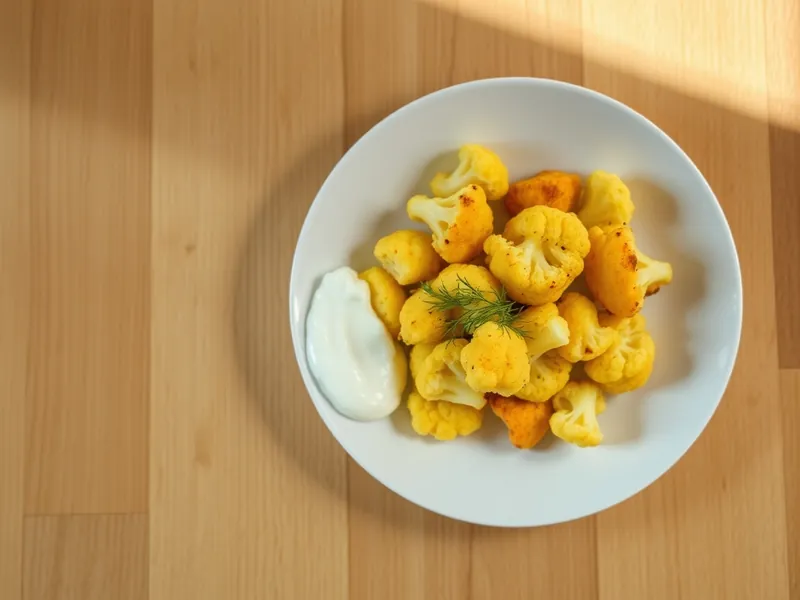

Цветная капуста, жаренная с яйцом
Отварные соцветия цветной капусты, обжаренные на сливочном масле и залитые яйцами
20 мин2 порц.341 ккал на порциюБ 18 · Ж 24 · У 13Русская кухня
Открыть в приложении: порции, таймеры, список покупок
Продукты на 2 порц.
- Цветная капуста600 г
- Яйцо куриное3 шт
- Сливочное масло20 г
- Растительное масло2 ч. л.
- Вода1500 мл
- Соль1 ч. л.
- Перец чёрный молотыйпо вкусу
- Укроп по желаниюпо вкусу
- Сметана 20% по желанию3 ст. л.
Как готовить
- Разберите капусту на соцветия, опустите в кипящую подсоленную воду и варите на среднем огне 5-6 минут, пока нож не будет входить легко. Откиньте на дуршлаг.
- Растопите сливочное масло с растительным и обжарьте капусту на среднем огне 5-6 минут до золотистых краёв.
- Взбейте яйца с щепоткой соли и перцем и залейте капусту.
- Накройте крышкой и жарьте на слабом огне 3-4 минуты, пока яйцо не схватится.
- Посыпьте укропом и подавайте со сметаной.
Совет. Не переваривайте капусту: в сковороде она ещё дойдёт, а разваренная превратится в кашу.